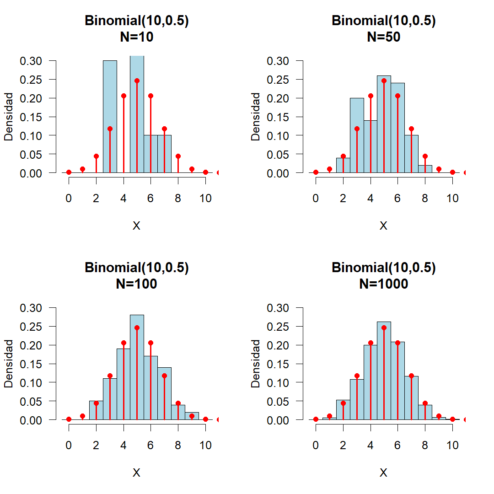
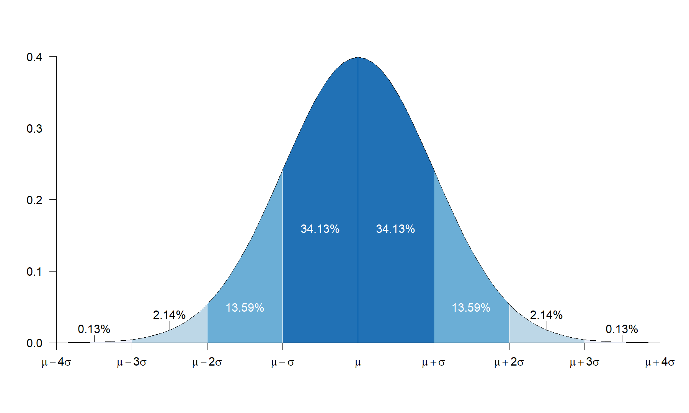
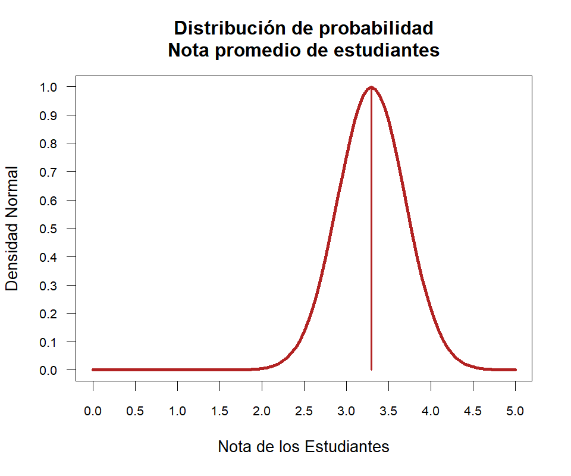
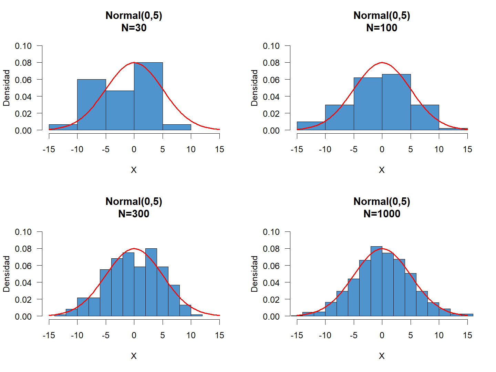

Probabilidad y Distribuciones de Probabilidad
Técnicas de Conteo
Para calcular las probabilidades de varios eventos es necesario contar el número de resultados posibles de un experimento, o contar el número de resultados favorables en un evento dado. el proceso de conteo puede simplificarse mediante el empleo de dos técnicas de conteo denominadas Permutaciones y combinaciones.
Regla de la Multiplicación
Si un suceso \(A\) puede ocurrir de \(n\) maneras y un suceso \(B\) de \(m\) formas, entonces el suceso \(A\) y \(B\) (sucede el evento \(A\) y sucede el evento \(B\)) puede ocurrir de \(n*m\) modos. En los problemas de conteo, el conector “y” se traduce en multiplicación.
\[\prod_{i=1}^k n_i\]
Ejemplo
El menú de un restaurante ofrece 3 platos calientes y 4 postres. ¿De cuántas maneras se puede elegir un almuerzo de 1 plato caliente y 1 postre?
Podríamos hacer una lista de todas las posibilidades, pero será mucho más cómodo aplicar el principio de la multiplicación: hay 3 maneras de elegir el plato caliente y para cada una de ellas hay 4 maneras de elegir el postre. Por lo tanto, hay \(3 \times 4 = 12\) comidas posibles.
Ejemplo
¿Cuántos códigos de una letra y un número de un dígito se pueden formar con las 27 letras del alfabeto y los números del 0 al 9?
Uno de los métodos podría ser listar todas las posibilidades \(A0\), \(A1\) … \(A9\); \(B0\), \(B1\) … \(B9\) … \(Z0\), \(Z1\) … \(Z9\) hasta obtener 27 filas de 10 códigos en cada una.
Es más simple utilizar el principio de la multiplicación: hay 27 maneras de elegir la letra y para cada una de ellas hay 10 maneras de elegir el número, de modo que son \(27 \times 10 = 270\) maneras en total.
Regla de la Adición
Si un suceso \(A\) puede ocurrir de \(n\) maneras y otro suceso \(B\) puede ocurrir de \(m\) maneras, entonces el suceso \(A\) o el \(B\) (sucede el evento \(A\) o sucede el evento \(B\)) pueden ocurrir de \(n + m\) formas, siempre y cuando los eventos no puedan suceder simultáneamente. En los problemas de conteo, el conector “o” se traduce en suma.
\[\sum_{i=1}^k n_i\]
Ejemplo
Cinco empresas de transporte terrestre tienen servicio diario entre Medellín y Bogotá. Tres empresas de aviación tienen vuelo diario entre Medellín y Bogotá. En consecuencia, hay \(5 + 3 = 8\) maneras de ir de Medellín a Bogotá por aire o por tierra.
Ejemplo
En el lanzamiento de un dado, ¿de cuántas maneras se puede obtener un número inferior a 2 o mayor que 4?
A: número inferior a 2, sucede solo de una manera.
B: número superior a 4, sucede de dos maneras.
A o B: número inferior a 2 o superior a 4, sucede de 1 + 2 = 3 maneras.
Muestreo con reemplazo: es el procedimiento de observar una unidad dentro de una población y retornarla al mismo conjunto. Entonces para \(m\) muestras de \(n\) objetos existen \(n^m\) opciones de seleccionar una muestra.
Muestreo sin reemplazo: es el procedimiento de observar una unidad dentro de una población y extraerla del conjunto. Para seleccionar una muestra, es preciso preguntar ¿importa el orden?
Permutaciones
Se quiere seleccionar \(r\) elementos de un conjunto de \(n\) objetos, cuando importa el orden de selección.
\[n(n-1)(n-2)...(n-r+1)=\cfrac{n!}{(n-r)!}=P_{n}^{r}\]
Ejemplo
Si se realiza un cuadrangular de fútbol entre las selecciones de Colombia, Argentina, México y Uruguay, en el que cada partido tiene un equipo que juega como local y el otro es visitante, ¿Cuántos partidos se jugarán?
En cada pareja formada interesa el orden en que se disponen los elementos, es decir, cuál selección jugará como local. \[P_{4}^{2}=\frac{4!}{(4-2)!}=\frac{4\times 3\times 2 \times 1}{2 \times 1}=4\times 3=12\]
Si generalizamos el procedimiento para un conjunto de \(n\) elementos distintos, el número de formas diferentes en que puede ordenarse es:
\[P_{n}^{n}=\cfrac{n!}{(n-n)!}=n!\]
Ejemplo
Un comité de cinco personas ha de repartir los cinco puestos directivos de presidente, vicepresidente, secretario, tesorero y vocal. ¿De cuántas maneras es posible hacerlo?
Se trata de ordenar las cinco personas en los cinco lugares; por lo tanto el número de maneras es: \[P_{5}^{5} = 5! = 5 \times 4 \times 3 \times 2 \times 1 = 120\]
Cuando se quiere ordenar \(n\) elementos entre los cuales hay objetos idénticos entre sí, algunos resultados estarán repetidos un cierto número de veces. Por ejemplo si se quiere ordenar de maneras diferentes las letras de la palabra COROZO, se encontrarán 6 resultados repetidos para cada palabra distinta, debido a que la letra O se encuentra 3 veces en la palabra.
Para conocer el número de palabras diferentes que podemos formar, se calcula la permutación del total de elementos, en este caso 6, y se divide por la permutación de los elementos que se encuentran repetidos.
\[\frac{\text{COROZO}}{\text{O's repetidos}}=\frac{P_6^6}{P_3^3}=\frac{720}{6}=120\]
En general, si se tiene \(n\) objetos, \(n_1\) de tipo 1, \(n_2\) de tipo 2, …, \(n_r\) de tipo \(r\), talque \(\sum_{i=1}^r=n\), entonces las formas de seleccionar los objetos en grupos es:
\[P_{n}^{n_1 n_2 ... n_r}=\cfrac{n!}{n_1!n_2!...n_r!}\]
Ejemplo
¿Cuántas palabras diferentes, aun sin significado, se pueden formar con las letras de la palabra AMOROSOS? \[P_8^{1,1,3,1,2}=\frac{8!}{1!1!3!1!2!}=\frac{8!}{3!2!}=3360\]
Combinatorias
Son los grupos que se pueden formar con varios elementos tomándolos uno a uno, dos a dos, tres a tres, etc., de modo que dos grupos que tengan el mismo número de elementos se diferencien por lo menos en un elemento. Es decir, sin que importe el orden en que se disponen.
Se quiere seleccionar \(r\) elementos de \(n\) objetos donde no importa el orden.
\[C_n^r={n\choose r}=\cfrac{n!}{r!(n-r)!}\]
Ejemplo
¿Cuántos comités de cuatro personas se pueden formar de un grupo de 9 personas?
Cada comité (sin establecer puestos directivos) es una selección de cuatro objetos de un total de nueve. El número de comités es: \[{9\choose_4}=\frac{9!}{4!(9-4)!}=\frac{9 \times 8 \times 7 \times 6 \times 5!}{4!5!}=126\]
Son combinaciones con repetición todas las agrupaciones de \(k\) elementos, dispuestos linealmente, que se pueden formar a partir de n elementos distintos, donde cada uno de los elementos puede formar parte de la agrupación tantas veces como sea posible y sin importar el orden de ellos.
Igual que las combinaciones, pero admitiendo elementos repetidos.
\[CR_n^r={n+r-1\choose r}=\cfrac{(n+r-1)!}{r!(n-1)!}\]
Ejemplo
En una repostería hay cinco tipos diferentes de pasteles. ¿De cuántas formas se pueden elegir cuatro pasteles?
No importa el orden (son pasteles). Puede haber dos o más pasteles en un grupo, luego con repetición. \[CR_5^4={5+4-1\choose 4}=\frac{8!}{4!(5-1)!}=\frac{8!}{4!4!}=70\]
Ejemplo
En una bodega hay 5 tipos diferentes de botellas, ¿cuántas formas existen de elegir 4 botellas? \[CR_5^4={5+4-1\choose 4}=\cfrac{(5+4-1)!}{4!(5-1)!}=\cfrac{8!}{4!4!}=70\]
Los números de las combinatorias se les llama frecuentemente coeficientes binomiales puesto que provienen de la expansión binomial:
\[(x+y)^n=x^n+{n\choose1}x^{n-1}y+{n\choose2}x^{n-2}y^2+\dots+{n\choose n}y^n=\sum_{r=0}^n{n\choose r}x^r y^{n-r}\]
Ejemplo \[\begin{align*} (x+y)^4 &=x^4+{4\choose1}x^3y+{4\choose2}x^2y^2+{4\choose3}xy^3+{4\choose4}y^4\\ &=x^4+4x^3y+6x^2y^2+4xy^3+y^4 \end{align*}\]
Factoriales Generalizados
Función Gamma
\[\Gamma(n)=\int_0^\infty x^{n-1}e^{-x}dx\]
Propiedades:
- Si \(n \in \mathbb{Z}\), entonces \(\Gamma(n)=(n-1)!\)
- Si \(n>1\), entonces \(\Gamma(n+1)=n\Gamma(n)=n!\)
- \(\Gamma(1/2)=\pi\)
Probabilidad
La probabilidad es una medida de la certidumbre asociada a un suceso o evento futuro y suele expresarse como un número entre 0 y 1 (o entre 0% y 100%). Antes de establecer una definición formal de probabilidad, es necesario comprender qué son los eventos y los espacios muestrales.
Aleatoriedad
La aleatoriedad está asociada a todo proceso cuyo resultado no puede ser determinado antes de que éste se produzca, debido a que los resultados de dicho proceso no contiene patrones reconocibles o regulares, que permitan pronosticar un resultado futuro.
Experimento aleatorio: Es aquel experimento que, a pesar de controlar las condiciones iniciales bajo las cuales se realiza, lo resultados obtenidos no son esencialmente los mismos, es decir, no es posible garantizar los mismos resultados que se obtienen inicialmente, debido a que su resultado es determinado por el azar.
Experimento estadístico: Es cualquier acción o proceso que se puede llevar a cabo bajo ciertas condiciones, de modo que en cada realización se presente un resultado, ya sea numérico o no numérico. Éstos deben cumplir ciertas características:
- No es posible predecir el resultado exacto del experimento, en cualquiera de sus ejecuciones.
- Es posible conocer todos los posibles resultados del experimento, previo a las realizaciones del mismo.
- Es posible repetir el experimento bajo condiciones idénticas o similares.
Espacio Muestral
Los posibles resultados de un experimento son llamados eventos simples. Un experimento se dice “aleatorio” si proporciona diferentes resultados, aún cuando se realiza en las mismas condiciones.
El conjunto de todos los posibles resultados de un experimento estadístico es llamado Espacio Muestral y se denota como \(\Omega\). Estos espacios pueden dividirse en espacios muestrales discretos y continuos.
Espacio muestral discreto: Es aquel que posee un número finito de posibilidades o una serie interminable con tantos elementos como números enteros existentes.
Ejemplo
Se lanza una moneada no cargada, e identifica los resultados como “cara” y “sello”, entonces: \[\Omega=\{s,c\}\]
Ejemplo
Considere el experimento de lanzar un dado convencional de 6 caras. Escriba el espacio muestral asociado a este experimento. \[\Omega=\{1,2,3,4,5,6\}\]
Espacio muestral continuo: Es aquel que posee un número infinito de posibilidades igual al número de puntos en un segmento de linea.
Ejemplo
Se selecciona una bombilla y se registra su duración en horas, entonces: \[\Omega=[0,\infty)\]
Ejemplo
Considere el experimento del tiempo de espera en minutos que pasa hasta que un estudiante termine el parcial en el horario de clase, si la clase dura 2 horas. Escriba el espacio muestral asociado a este experimento. \[\Omega=[0,120)\]
Eventos
Un evento es un subconjunto del espacio muestral \(\Omega\), se dice que un evento \(A\) ocurre si el resultado del experimento aleatorio pertenece a \(A\)

Los eventos pueden ser clasificados en:
- Simple: se da cuando el evento tiene un solo resultado o punto muestral.
Ejemplo
Considere el experimento de lanzar un dado convencional de 6 caras. \(A\) es el evento en el cual se saca un número 3 en el dado. \[A=\{3\}\]
- Compuesto: se da cuando el evento tiene más de un resultado o punto muestral. Estos resultados pueden ser dependientes o independientes.
Ejemplo
Considere el experimento de lanzar un dado convencional de 6 caras. \(B\) es el evento en el cual se saca un número primo en el dado. \[A=\{2,3,5\}\]
- Imposible: se da cuando el evento no puede ocurrir dentro del espacio muestral. El evento se denota entonces por el símbolo \(\emptyset\) que representa al conjunto vacío.
Ejemplo
Considere el experimento de lanzar un dado convencional de 6 caras. \(C\) es el evento en el cual se saca un 8 en el dado. \[A=\{\emptyset\}\]
Teoría de conjuntos
Dado que un evento puede estar compuesto por un conjunto de datos, las relaciones y resultados de la teoría de conjuntos, pueden ser utilizados para solucionar problemas de probabilidad. Por ello definimos como:
- Subconjunto: Sean dos eventos \(A\) y \(B\). Si los elementos de un evento están contenidos en el otro, se llama subconjunto. \(A \subset B\): \(A\) está contenido en \(B\), o \(B \subset A\): \(B\) contiene \(A\).

- Conjuntos Equivalentes: Si \(A \subset B\) y \(B \subset A\) entonces \(A=B\).

Conjunto Vacío: Si \(A\) no contienen elementos se llama vacío o nulo y se denota como \(\emptyset\).
Complemento: El complemento de un evento \(A\) respecto al espacio \(\Omega\), son los elementos que están en \(\Omega\) pero no en \(A\), se denota como \(\bar{A}\), \(A^c\), \(A^{\prime}\) o \(\Omega - A\).

- Intersección: Sean dos eventos \((A, B) \in \Omega\), cuando todos los elementos están contenidos en \(A\) y \(B\) se le llama intersección de eventos \(A \cap B\).

- Unión: Sean dos eventos \((A, B) \in \Omega\), cuando todos los elementos están contenidos en \(A\) o \(B\) o en ambos, se le llama unión de eventos. \(A \cup B=A+B-A\cap B\)

- Diferencia de Conjuntos: Sean dos eventos \((A, B) \in \Omega\), todos los elementos de \(A\) que no se encuentran en \(B\) determina la diferencia de conjuntos \(A-B\).

Teoremas de eventos
- Ley conmutativa: \(\{A \cup B=B\cup A\}\), \(\{A \cap B = B \cap A\}\)
- Ley asociativa: \(\{A \cup (B \cup C)=(A \cup B) \cup C\}\), \(\{A \cap (B \cap C)=(A \cap B) \cap C\}\)
- Ley distributiva: \(\{A \cap (B \cup C)=(A \cap B) \cup (A \cap C)\}\), \(\{A \cup (B \cap C)=(A \cup B) \cap (A \cup C)\}\)
- \(\overline{(\bar{A})}=(A^\prime)^\prime=A\)
- \(\{A \Omega= A\}\), \(\{A \cup \Omega = \Omega\}\), \(\{A\emptyset=\emptyset\}\), \(\{A \cup \emptyset=A\}\)
- \(\{A\bar{A}=\emptyset\}\), \(\{A \cup \bar A=\Omega\}\), \(\{A \cap A=A\}\), \(\{A \cup A=A\}\)
- \(\{\overline{A\cup B}=\bar A \cap \bar B\}\), \(\{\overline{A\cap B}=\bar A \cup \bar B\}\)
- \(A-B=A\bar B\)
- Ley de Morgan.
- \(\overline{\bigcup_{\lambda \in \Lambda}A_\lambda}=\bigcap_{\lambda\in\Lambda}\bar{A_\lambda}\)
- \(\overline{\bigcap_{\lambda \in \Lambda}A_\lambda}=\bigcup_{\lambda\in\Lambda}\bar{A_\lambda}\)
- Si \((A, B) \in \Omega\) entonces \(\{A=AB \cup A\bar B\}\) y \(\{AB \cap A\bar B=\emptyset\}\).
- Si \(A \subset B\) entonces \(AB=A\) y \(A\cup B=B\).
Disyunción o Eventos Mutuamente Excluyentes
Sean \((A, B) \in \Omega\), los eventos son disjuntos si \(A \cap B=\emptyset\). En general una colección de eventos \(A_1, A_2,...\) son mutuamente excluyentes si \(A_i \cap A_j = \emptyset, \: \forall i \neq j\).
Probabilidad a priori
Sea \(A \in \Omega\) la probabilidad de ocurrencia del evento \(A\) se define como:
\[P(A)=\cfrac{\text{# Casos favorables}}{\text{# Casos posibles}}\]
Don Ramiro todos los días juega chance, apuesta los número 8845, 1254 y 6743. Como hoy es Martes, él sabe que la semana pasada el número ganador fue 9654. ¿Cuál es la probabilidad de ganar el chance con sus números? Como “ya cayó” el 9654 ¿justifica no jugarlo?
Suponga una bolsa que contiene 10 bolas, de las cuales 3 son negras, 5 son azules, y 2 son verdes. Si se saca una bola al azar de la bolsa. Cuál es la probabilidad de que sea:
Negra
Azul
Roja
Verde
Negra o Azul
No sea Negra y No sea Roja
Axiomas de probabilidad
- Sea \(A \in \Omega\) entonces \(P(A) \ge 0\)
- \(P(\Omega)=1\).
- Sean \((A, B) \in \Omega\) eventos mutuamente excluyentes, entonces \(P(A \cup B)=P(A)+P(B)\).
- Si \(\Omega\) está compuesto de infinitos conjuntos o eventos.
- Si \(A_1 \supset A_2 \supset A_3 \supset ...\) y \(\bigcap_{n=1}^{\infty} A_n =\emptyset\) entonces \(\text{lim}_{n \to \infty} P(A_n)=0\).
- Sean \(A_1, A_2, A_3,... \in \Omega\) si \(A_i \cap A_j = \emptyset, \: \forall i\neq j\) entonces \(P(\bigcup_{i=1}^{\infty}A_i)=\sum_{i=1}^{\infty}P(A_i)\).
- Si \(A_1 \supset A_2 \supset A_3 \supset ...\) y \(\bigcap_{n=1}^{\infty} A_n =\emptyset\) entonces \(\text{lim}_{n \to \infty} P(A_n)=0\).
Propiedades
- \(P(A^\prime)=1-P(A)\)
- \(P(\emptyset)=0\)
- Si \(A \subset B \Rightarrow P(A) \le P(B)\)
- Para cualquier evento \(A\), se cumple \(0 \leq P(A)\leq 1\)
- \(P(A\cup B)=P(A)+P(B)-P(A \cap B)\)
Se lanza un dado. ¿Cual es la probabilidad de el resultado sea 2 o 5?
A: Evento que el resultado es 2
B: Evento que el resultado es 5
\[P(A \cup B)=P(A)+P(B)=\cfrac{1}{6}+\cfrac{1}{6}=\cfrac{1}{3}\]
En un lote de 50 bombillas hay 2 bombillas que presentan fallas. Un inspector examina 5 bombillas, las cuales fueron seleccionadas al azar y sin reemplazo. ¿Cuál es la probabilidad de que al menos 1 de las bombillas es defectuosa entre las 5 examinadas?
A: Evento de tener todas las bombillas nuevas
\[P(A^\prime)=1-P(A)\] \[P(A)=\cfrac{{48\choose 5} {2\choose 0}}{50 \choose 5}=0.8082\] \[P(A^\prime)=1-P(A)=1-0.8082=0.1918\]
Una mano de cartas consiste en 5 cartas elegidas al azar y sin reemplazo de una baraja de 52 cartas. ¿Cuál es la probabilidad de que en la mano resulten 3 corazones y 2 picas?
A: Evento de obtener 3 corazones y 2 picas \[P(A)=\cfrac{{13\choose 3} {13\choose 2}}{52 \choose 5}=0.0086\]
Probabilidad Condicional
Algunas veces la ocurrencia de un envento \(A\) puede afectar la ocurrencia posterior de otro evento \(B\). Suponga un grupo de 20 artículos que contiene 10 defectuosos y 10 que no lo son. Una persona selecciona un artículo al azar y lo instala en un equipo.
A: evento en que la selección del artículo resulte defectuoso \[P(A)=\cfrac{10}{20}=0.5\]
Ahora bien, suponga que se selecciona otro artículo de los 19 restantes.
B: evento en que la selección del segundo artículo resulte defectuoso
| Si el primero es defectuoso | Si el primero no es defectuoso |
|---|---|
| \[P(B)=\cfrac{9}{19}\] | \[P(B)=\cfrac{10}{19}\] |
Sean \((A, B) \in \Omega\), la probabilidad condicional \(A\) dado \(B\) denotado como \(P(A|B)\) se define como:
\[P(A|B)=\frac{P(A \cap B)}{P(B)} \:\:\:\text{donde}\:\:P(B)>0\] \[P(B|A)=\frac{P(A \cap B)}{P(A)} \:\:\:\text{donde}\:\:P(A)>0\]
En un grupo de estudiantes, el 40% de los alumnos juega al fútbol, el 30% al baloncesto y el 10% practica ambos deportes: Si juega fútbol, ¿cuál es la probabilidad de que juegue baloncesto?
\[P(B|F)=\frac{P(B \cap F)}{P(F)}=\frac{0.1}{0.4}=0.25\]
Suponga que se realiza un estudio en la Facultad de Ingeniería Industrial, en donde se le pregunta a sus estudiantes, en cuál deporte preferirían practicar entre Fútbol, Baloncesto, Voleibol y Tenis. Dicha pregunta se le realiza a un total de 400 estudiantes, encontrando los siguientes resultados
| Fútbol | Baloncesto | Voleibol | Tenis | |
|---|---|---|---|---|
| Administración de empresas | 48 | 27 | 22 | 23 |
| Contaduría | 34 | 41 | 25 | 10 |
| Economía | 66 | 51 | 13 | 40 |
A partir de la tabla anterior
Construya una tabla de probabilidades.
¿Cuál es la probabilidad de que se seleccione un estudiante que prefiera el Fútbol sobre los otros deportes?
¿Cuál es la probabilidad de que se seleccione un estudiante que estudie Contaduría?
¿Cuál es la probabilidad de que se seleccione un estudiante que estudie Economía y prefiera el Tenis sobre los demás deportes?
Si se selecciona un estudiante de Contaduría, ¿Cuál es la probabilidad de que prefiera el Voleibol sobre los otros deportes?
¿Cual es la probabilidad de que un estudiante sea de Economía, si se sabe que prefiere el Baloncesto sobre los otros deportes?
Regla Multiplicativa
\[P(A \cap B)=P(A)P(B|A)=P(B)P(A|B)\]
Una bolsa contiene seis pelotas rojas y cuatro azules, una segunda contiene siete rojas y dos azules. El experimento consiste en seleccionar una pelota al azar de la primera bolsa y colocarla dentro de la segunda bolsa. Seguidamente se selecciona una de la segunda bolsa y se coloca en la primera bolsa.

Cuál es la probabilidad de que se seleccione una pelota roja de la primera bolsa y una roja de la segunda bolsa?
Para resolver tal problema podemos emplear lo conocido como un Diagrama de Árbol el cual consta de gráficas todos los posibles resultados, de la siguiente forma

Entonces, si observamos el diagrama de árbol, podemos apreciar que la probabilidad de que se saque una bola roja de la primera bolsa (primer paso) es de
\[P(R_1)=\frac{6}{10}\]
mientras que la probabilidad de sacar una bola roja de la segunda bolsa (segundo paso) es de
\[P(R_2|R_1)=\frac{8}{10}\]
Y por tanto, al aplicar la regla multiplicativa, tenemos que la probabilidad de sacar una bola roja de la primera bolsa, introducirla en la segunda bolsa, y posteriormente sacar una bola roja de la segunda bolsa, es de
\[P(R_1 \cap R_2)=P(R_1)P(R_2|R_1)=\frac{6}{10}\times\frac{8}{10}=\frac{48}{100}=0.48\]
Independencia entre eventos
Si un experimento estadístico pueden ocurrir dos eventos A y B que son independientes entre si, entonces
\[P(A|B)=P(A)\quad\text{o}\quad P(B|A)=P(B)\]
lo cual es equivalente a
\[P(A\cap B)=P(A)P(B)\]
Una bolsa contiene 100 pelotas, de las cuales 25 son rojas, 40 son azules y 35 son negras. Si se seleccionan dos pelotas, ¿Cuál es la probabilidad de que la primera sea negra y la segunda sea azul, si la primera pelota se reemplaza antes de sacar la segunda? Las probabilidades son independientes?
Dado que la selección de las pelotas se realiza con reemplazo, tendremos que la probabilidad de un paso a otro permanecerá constante entre todas las pelotas, por ejemplo, si se saca una bola negra en el primer paso, entonces se registrará su color, se volverá a introducir en la bolsa, y posteriormente se realizará el segundo paso, asegurando que la probabilidad que tendrán todas las bolas de ser seleccionadas permanezca invariable, respecto a las probabilidades iniciales. Dado lo anterior tendremos el siguiente escenario

Para realizar el cálculo de la probabilidad de sacar una bola negra en el primer paso y una bola azul en el segundo paso, con reemplazo, se tendrá que
\[\begin{align*} P(N_1 \cap A_2) &=P(N_1)P(A_2|N_1)\\\\ &=\frac{35}{100}\times \frac{40}{100}\\\\ &=\frac{1400}{10000}\\\\ &=0.14 \end{align*}\]
Encontrando entonces que la probabilidad de sacar una bola Negra en el primer paso y una bola azul en el segundo paso es del 14%. Ahora, para saber si los eventos planteados son o no independientes, podemos centrarnos en la primera linea, en donde tenemos que la probabilidad de sacar una bola negra es de \(P(N_1)=35/100\), mientras que la probabilidad de sacar una bola azul es de \(P(A_1)=40/100\), y en consecuencia, al verificar la formula asociada a independencia entre eventos, tendremos que
\[\begin{align*} P(N_1 \cap A_2) &=P(N_1)P(A_2|N_1)\\\\ \frac{1400}{10000} &=\frac{35}{100}\times \frac{40}{100}\\\\ \frac{1400}{10000} &=\frac{1400}{10000}\\\\ 0.14 &=0.14 \end{align*}\]
Y por tanto, al verificar que la igualdad se cumple, se concluye que los eventos son independientes.
Teorema Probabilidad Total
Sean \(B_1, B_2,...,B_k\) eventos mutuamente excluyentes \((B_i \cap B_j =\emptyset, \forall i \neq j)\) y exhaustivos \(\left(\bigcup_{i=1}^k B_i = \Omega\right)\), entonces para cualquier evento \(A\) se cumple:
\[P(A)=P(A\cap B_1)+P(A\cap B_2)+\dots+P(A\cap B_k)\]
o alternativamente, al aplicar la formula de la Regla multiplicativa, tenemos que
\[P(A)=\sum_{j=1}^{n}P(A \cap B_j)=\sum_{j=1}^{n}P(B_j)P(A|B_j)\]
Tres deportólogos de cierto equipo de baloncesto \(D_1\), \(D_2\), \(D_3\) realizan revisiones preventivas al 30%, 45%, 25% de los jugadores respectivamente. Se sabe por experiencia que 4%, 5%, 2% de los jugadores atendidos presentan lesiones que no detecta el médico, respectivamente. Si se selecciona de forma aleatoria un jugador de baloncesto después de la revisión. Cuál es la probabilidad de que éste se encuentre lesionado?
Definamos los eventos:
\(A\): El jugador de baloncesto se encuentra lesionado.
\(D_1\): el jugador fue atendido por el deportólogo 1.
\(D_2\): el jugador fue atendido por el deportólogo 2.
\(D_3\): el jugador fue atendido por el deportólogo 3.
Dado que el interés radica en encontrar la probabilidad de que se seleccione un jugador y resulte lesionado, entonces nos están pidiendo que se desea calcular la \(P(A)\).
Como entre la información dada en el enunciado no nos da la probabilidad de que un jugador se encuentre lesionado, entonces podemos tratar de calcularla mediante el teorema de probabilidad total, aprovechando que los eventos \(D_1\), \(D_2\), \(D_3\) son eventos mutuamente excluyentes (Un jugador que es atendido por un deportólogo, no puede ser atendido simultáneamente por otro), exhaustivos (El total de los jugadores del equipo, solo puede ser atendido por alguno de estos tres deportólogos) y que nos están dando las probabilidades de los eventos \(A|D_1\), \(A|D_2\) y \(A|D_3\).
Partiendo de esto tenemos las siguientes probabilidades:
\[P(D_1)=0.30 \quad P(D_2)=0.45\quad P(D_3)=0.25\\ P(A|D_1)=0.04 \quad P(A|D_2)=0.05\quad P(A|D_3)=0.02\]
Entonces, al aplicar el teorema de probabilidad total, tendremos que
\[\begin{align*} P(A) &=P(D_1)P(A|D_1)+P(D_2)P(A|D_2)+P(D_3)P(A|D_3)\\ &=0.30\times0.04 + 0.45\times0.05+ 0.25\times0.02\\ &=0.0395 \end{align*}\]
Por tanto, la probabilidad de que un jugador atendido por los deportólogos del equipo esté lesionado es del 3.95%.
Teorema de Bayes
Sea \(\{A_i\}_{i=1}^{n}\) un conjunto de \(n\) eventos cada uno con probabilidad positiva, además son mutuamente excluyentes. Para cualquier evento \(B \in \Omega\) con \(P(B)>0\) se cumple:
\[P(A_j|B)=\frac{P(A_j \cap B)}{P(B) }=\frac{P(B|A_j)P(A_j)}{\sum_{i=1}^{n}P(A_j)P(B|A_j)}=\frac{\text{Regla Multiplicativa}}{\text{Probabilidad Total}}\]
Esto nos permite hallar probabilidades de los diferentes sucesos que pueden causar la ocurrencia \(B\). Por esta razón con frecuencia se hace referencia al Teorema de Bayes como el teorema sobre la probabilidad de causas.
La caja \(I\) contiene 3 bolas rojas y 2 azules en tanto que la caja \(II\) contiene 2 bolas rojas y 8 azules. Se lanza una moneda. Si se obtiene cara se saca una bola de la caja \(I\); si se obtiene sello se saca una bola de la caja \(II\). Supóngase que quien lánza la moneda no revela si resulta cara o sello (de tal forma que la caja de la cual se sacó la bola no se revela), pero revela que se sacó una bola roja. ¿Cuál es la probabilidad de que se escogiera la caja \(I\) (es decir que el resultado de la moneda sea cara)?
Los eventos son:
\(R\) indica el suceso de sacar una bola roja.
\(I\) indica la selección de la caja 1.
\(II\) indica la selección de la caja 2.
Buscamos la probabilidad de que se escoja la caja \(I\) y se conoce se sacó una bola roja.
\[\begin{align*} P(I|R) &=\frac{P(I)P(R|I)}{P(I)P(R|I)+P(II)P(R|II)}\\\\ &=\frac{(1/2)(3/5)}{(1/2)(3/5)+(1/2)(2/10)}\\\\ &=\frac{3/10}{4/10} = \frac{3}{4} = 0.75 \end{align*}\]
Aplicaciones Teorema de Bayes
En el campo de ciencias de la salud se utiliza ampliamente la aplicación de leyes de probabilidad y conceptos relacionados en la evaluación de pruebas de detección y criterios de diagnostico. A los médicos les interesa tener mayor capacidad para predecir correctamente la presencia o ausencia de una enfermedad en particular a partir del conocimiento de los resultados (positivos o negativos) de pruebas y el estado de los síntomas (presentes o ausentes) que se manifiestan. También, es de interés la información respecto a la probabilidad de resultados positivos o negativos de las pruebas y la probabilidad de presencia o ausencia de un síntoma específico en pacientes con o sin una enfermedad en particular.
En pruebas de detección se debe considerar con cuidado que no siempre son pruebas infalibles. Es decir, el procedimiento puede dar un falso positivo o un falso negativo.
Falso Positivo: resulta cuando una prueba indica que el estado es positivo, cuando en realidad es negativo.
Falso Negativo: resulta cuando una prueba indica que un estado es negativo, cuando en realidad es positivo.
En resumen, se debe responder a las siguientes preguntas para evaluar la utilidad de los resultados de la prueba y el estado de los síntomas para determinar si el individuo tiene o no alguna enfermedad:
Dado que un individuo tiene la enfermedad, ¿qué prqbabilidad existe de que la prueba resulte positiva (o la presencia de un síntoma)?
Dado que un individuo no tiene la enfermedad, ¿cuál es la probabilidad de que la prueba resulte negativa (o la ausencia de un síntoma)?
Dada una prueba positiva de detección (o la presencia de un síntoma), ¿que probabilidad existe de que el individuo tenga la enfermedad?
Dado el resultado negativo de una prueba de detección (o la ausencia de un síntoma), ¿cuál es la probabilidad de que el individuo no tenga la enfermedad?
| Enfermedad | |||
|---|---|---|---|
| Resultado de la prueba | Presente \((D)\) | Ausente \((\bar{D})\) | Total |
| Positivo \((T)\) | \(a\) | \(b\) | \(a+b\) |
| Negativo \((\bar{T})\) | \(c\) | \(d\) | \(c+d\) |
| Total | \(a+c\) | \(b+d\) | \(n\) |
La tabla muestra para estos \(n\) individuos sus estados con respecto a la enfermedad, y es el resultado de una prueba de detección diseñada para identificar a los individuos enfermos. Las entradas de las casillas representan el número de individuos que caen en las categorías definidas por los encabezados de renglón y columna. Por ejemplo, \(a\) es el número de individuos que tienen la enfermedad y un resultado positivo en la prueba de detección.
Sensibilidad para pruebas diagnósticas
La sensibilidad de una prueba (o síntoma) es la probabilidad de un resultado positivo de la prueba (presencia o ausencia del sintoma) dada la presencia de la enfermedad.
\[P(T|D)=\frac{P(T \cap D)}{P(D)}=\frac{a}{a+c}\]
Especificidad para pruebas diagnósticas
La especificidad de una prueba (o síntoma) es la probabilidad de un resultado negativo de la prueba (o ausencia del síntoma) dada la ausencia de la enfermedad.
\[P(\bar{T}|\bar{D})=\frac{P(\bar{T} \cap \bar{D})}{P(\bar{D})}=\frac{d}{b+d}\]
Valor predictivo positivo de una prueba
El valor que predice la positividad de una prueba de detección (o un síntoma) es la probabilidad de que un individuo tenga la enfermedad, dado que el individuo presenta un resultado positivo en la prueba de detección (o presenta el síntoma).
\[P(D|T)=\frac{P(D \cap T)}{P(T)}=\frac{P(T|D)P(D)}{P(T|D)P(D)+P(T|\bar{D})P(\bar{D})}=\frac{a}{a+b}\]
Valor predictivo negativo de una prueba
El valor que predice la negatividad de la prueba de detección (o síntoma) es la probabilidad de que el individuo no tenga la enfermedad, dado que el resultado de la prueba de detección es negativo (es decir no presenta el síntoma).
\[P(\bar{D}|\bar{T})=\frac{P(\bar{D} \cap \bar{T})}{P(\bar{T})}=\frac{P(\bar{T}|\bar{D})P(\bar{D})}{P(\bar{T}|D)P(D)+P(\bar{T}|\bar{D})P(\bar{D})}=\frac{d}{c+d}\]
La estimación del valor que predice la positividad o negatividad de una prueba (o síntoma) puede obtenerse a partir del conocimiento de la sensibilidad y especificidad de la prueba (o del síntoma) y de la probabilidad de la enfermedad relevante en la población general. Para obtener la estimación de estos valores de predicción se utiliza el teorema de Bayes.
Un equipo de investigación médica pretende evaluar una prueba de detección propuesta para la enfermedad de Cáncer Intestinal. La prueba se basa en una muestra aleatoria de 2030 personas a los cuales se les realizó una endoscopia para confirmar la enfermedad. Los resultados son los siguientes:
| Pacientes con cáncer intestinal | ||||
|---|---|---|---|---|
| Resultado de la prueba | Sí \((D)\) | No \((\bar{D})\) | Total | |
| Positivo \((T)\) | \(20\) | \(180\) | \(200\) | |
| Negativo \((\bar{T})\) | \(10\) | \(1820\) | \(1830\) | |
| Total | \(30\) | \(2000\) | \(2030\) | |
Calcule:
Prevalencia
Sensibilidad de la prueba
Especificidad de la prueba
Valor predictivo positivo
Valor predictivo negativo
Variables Aleatorias
En la mayoría de problemas a los que comúnmente nos enfrentamos, la descripción del conjunto de posibles resultados de un experimento aleatorio puede ser complicado y por lo tanto el cálculo de probabilidades también se dificulta.
Por ejemplo, si una persona es seleccionada de una población, diversas características pueden ser de interés y cada una aporta al entendimiento de un fenómeno en especial, como son, el tiempo que emplea en transportarse de su casa al lugar de trabajo, que tan lejos está de su casa el sitio donde trabaja, cuantos hijos tiene, cuantas horas duerme, cuantas personas conforman su grupo familiar, cuanto gana, cuanto gasta, cuanto paga por servicios, cuantas llamadas hace diariamente, etc.
Una Variable Aleatoria es una función definida en un Espacio Muestral que asigna a cada resultado de un experimento aleatorio un valor real. Usualmente son denotadas con letras mayúsculas como (\(X\), \(Y\), \(Z\), \(T\), etc). Al conjunto de todos los posibles resultados de una variable aleatoria se le llamará Rango de la variable (\(A_X\)).
Variables Aleatorias Discretas
Un grupo de \(n\) sujetos es sometido a cierto tratamiento y después de un tiempo se registra cuantos logran mejorar con dicho tratamiento. Sea X la variable aleatoria que cuenta cuántos sujetos mejoran con el tratamiento. Entonces el rango de \(X\) será \(A_X = {0, 1, 2,..., n}\).
En una gran población se encuestan de manera aleatoria sujetos hasta encontrar el primero que responde afirmativamente a una pregunta de interés. Si \(X\) es la variable aleatoria que cuenta el número de sujetos encuestados hasta encontrar el primero que responde afirmativamente, entonces el rango de \(X\) está dado por \(A_X = {1, 2, 3,...}\).
Este tipo de variables se traducen en funciones matemáticas o valores tabulados, y la probabilidad se calcula a través de la función de masa de probabilidad (f.m.p). Sea la variable aleatoria discreta \(X\), para cualquier resultado posible de \(X\) se cumple que:
- \(p(x)\geq0\) para todo \(x\) en el rango de \(X\).
- \(\sum_x p(x)=1\)
- \(p(x)=P(X=x)\)
Suponga un experimento aleatorio que consta en consultar una familia conformada por 3 hijos, en donde, se asume que la probabilidad de ser niño o niña es la misma. Si se define la variable aleatoria \(X\), el número de niñas que hay en la familia.
Sea \(H\) la letra que representa que el miembro de la familia es niño y \(M\) para denotar que el miembro de la familia es niña, entonces, se tendrá que el espacio muestral se define como \[\Omega=\{HHH,HHM,HMH,MHH,HMM,MHM,MMH,MMM\}\] Como el interés de la variable aleatoria \(X\) radica en el número de niñas que hay en la familia, se tendrá entonces que a partir del espacio muestral \(\Omega\) se puede contar el número de éxitos que hay en cada situación asignando los valores \(0\), \(1\), \(2\) y \(3\) a la variable aleatoria \(X\).
Para encontrar la función de probabilidades del experimento aleatorio asociadas a la variable aleatoria \(X\), podemos emplear la definición de la probabilidad a priori, aprovechando que todos los puntos del espacio muestral poseen la misma probabilidad. En otro caso podríamos emplear un diagrama de árbol para encontrar dichas probabilidades.
Para el caso de \(X=0\), observamos que de las \(8\) posibles situaciones que hay dentro del espacio muestral \(\Omega\), solo tenemos una situación en donde no hay ninguna mujer, y en consecuencia, al aplicar la definición de probabilidad a priori, se tendrá que la probabilidad de que \(X=0\), es: \[P(X=0)=\frac{1}{8}\] Procedimiento similar se aplica para \(X=1\), \(X=2\) y \(X=3\), obteniendo como resultado la siguiente tabla de probabilidades:
\(X\) \(0\) \(1\) \(2\) \(3\) \(p(x)\) \(\frac{1}{8}\) \(\frac{3}{8}\) \(\frac{3}{8}\) \(\frac{1}{8}\) Para calcular la probabilidad de que en una familia que posee tres hijos, hayan 2 o más niñas entonces se aplica la suma de probabilidades. \[P(X \geq 2)=\sum_{x=2}^{3} p(x)=p(2)+p(3)=\frac{3}{8}+\frac{1}{8}=\frac{1}{2}\]
Función de distribución acumulada caso discreto
La función de distribución acumulada (f.d.a) denotada por \(F(x)\), para una variable aleatoria discreta \(X\) con distribución de probabilidad \(p(x)\) es de la forma
\[F(x)=P(X\leq x)=∑_{t\leq x} p(t)\quad −\infty<x<\infty\]
para cualquier \(x\) dentro del rango de \(X\), \(F(x)\) será la suma acumulada de todos los valores de rango de \(X\) menores a \(x\).
Nota: Si se quieren calcular probabilidades con la función de distribución acumulada en el caso discreto, entonces, si \(a\) y \(b\) son dos números constantes enteras, deberán tenerse en cuenta las siguientes reglas
- \(P(a\leq X\leq b)=F(b)−F(a−1)\)
- \(P(a<X\leq b)=F(b)−F(a)\)
- \(P(a\leq X<b)=F(b−1)−F(a−1)\)
- \(P(a<X<b)=F(b−1)−F(a)\)
- \(P(X \geq a)=1-P(X < a)=1−F(a−1)\)
- \(P(X>a)=1-P(X\leq a)=1−F(a)\)
- \(P(X\leq b)=F(b)\)
- \(P(X<b)=F(b−1)\)
Basado en el ejemplo anterior, calculemos la función de distribución acumulada \(F(x)\) y calculemos la probabilidad de que en una familia que posee tres hijos, hayan 2 o más niñas.
A partir de la tabla donde se define la función de masa de probabilidad se procede a realizar el cálculo de la función de distribución acumulada \(F(x)\). Para ello, debemos calcular las siguientes probabilidades. \[\begin{align*} F(0) =& P(X\leq 0)=p(0)=1/8\\\\ F(1) =& P(X\leq 1)=p(0)+p(1)=4/8\\\\ F(2) =& P(X\leq 2)=p(0)+p(1)+p(2)=7/8\\\\ F(3) =& P(X\leq 3)=p(0)+p(1)+p(2)+p(3)=8/8 \end{align*}\] Entonces, mediante el empleo de estas probabilidades, podemos construir la función de distribución acumulada para la variable aleatoria \(X\), tal que \[\begin{align*} F(x) = \begin{cases} 0 & x<0 \\ \frac{1}{8} & 0\leq x<1 \\ \frac{4}{8} & 1\leq x<2 \\ \frac{7}{8} & 2\leq x<3 \\ \frac{8}{8} & x\geq 3 \end{cases} \end{align*}\] Dado que el interés es calcular la probabilidad de que el número de niñas sea mayor a \(1\) pero no más de \(2\), entonces se tendrá que la probabilidad de interés es la siguiente \[P(1 < X \leq 2)\] Entonces, siguiendo las reglas anteriormente expuestas, dicha probabilidad puede calcularse mediante \[\begin{align*} P(X \geq 2) & = 1 - F(2-1) \\ & = 1 - F(1) \\ & = 1 - \frac{4}{8}\\ & = \frac{4}{8} = \frac{1}{2} \end{align*}\] y por tanto, se tendrá que la probabilidad de que en una familia de \(3\) hijos, tengan \(2\) o más niñas es de 50%.
Esperanza matemática caso discreto
Si x es una variable aleatoria con fmp p(x), entonces la media o valor esperado de la variable aleatoria se denota por \(E[X]\) o \(\mu\) está dada por
\[E[X]=\sum_x xp(x)\]
El valor esperado del número de niñas que hay en una familia que posee 3 hijos sería: \[\begin{align*} E[X]&=\sum_{0}^3x\,p(x) \\\\ &=0\,p(0)+1\,p(1)+2\,p(2)+3\,p(3) \\\\ &=0\left(\frac{1}{8}\right)+1\left(\frac{3}{8}\right)+2\left(\frac{3}{8}\right)+3\left(\frac{1}{8}\right) \\\\ &=0+\frac{3}{8}+\frac{6}{8}+\frac{3}{8} \\\\ &=\frac{12}{8} \\\\ &=1.5 \end{align*}\] es decir, se tedrá que en una familia que posea \(3\) hijos, se espera encontrar que el número promedio de niñas será de \(1.5\) niñas.
Propiedades de la esperanza matemática
Sea \(a\) y \(b\) dos números constantes (reales) y \(X\) una variable aleatoria, entonces se tiene que
- \(E[a]=a\)
- \(E[X+b]=E[X]+b\)
- \(E[aX]=aE[X]\)
- si \(g(X)\) es una función de \(X\), entonces
\[E[g(X)]=\sum_xg(x)p(x)\]
Varianza caso discreto
Sea \(X\) una variable aleatoria con fmp \(p(x)\), entonces si \(m(X) = (X - E[X])^2\), se tendrá que la varianza de \(X\) que se denota \(Var[X]\) o \(\sigma^2\) estará dada por
\[Var[X] = E\left\{\left(X-E[X]\right)^2\right\}=\sum_x(x-E[X])^2p(x)\]
Puede demostrarse a partir de la ecuación anterior, que una alternativa para el cálculo de la \(Var[X]\) es de la forma
\[Var[X] = E[X^2]-E[X]^2\]
además, la raíz cuadrada de la varianza de \(X\) se llama desviación estándar de \(X\), se denota por \(SD[X]\) o \(\sigma\) y se define como
\[SD[X] = \sqrt{Var[X]}\]
La desviación estándar del número de niñas que hay en una familia que posee 3 hijos requiere del cálculo de la varianza, entonces primero se debe calcular \(E(X^2)\): \[\begin{align*} E[X^2]&=\sum_{0}^3x^2\,p(x) \\\\ &=0^2\,p(0)+1^2\,p(1)+2^2\,p(2)+3^2\,p(3) \\\\ &=0\left(\frac{1}{8}\right)+1\left(\frac{3}{8}\right)+4\left(\frac{3}{8}\right)+9\left(\frac{1}{8}\right) \\\\ &=0+\frac{3}{8}+\frac{12}{8}+\frac{9}{8} \\\\ &=\frac{24}{8} \\\\ &=3 \end{align*}\] Entonces la varianza es: \[\begin{align*} Var[X]&=E[X^2] - E[X]^2 \\ &=3 - (1.5)^2 \\ &=3 - 2.25 \\ &=0.75 \end{align*}\] Por lo tanto la desviación estándar es \(SD[X]=\sqrt{0.75}=0.8660\). Es decir, se tendrá que el número promedio de niñas que tiene una familia que posee \(3\) hijos es de \(1.5\) niñas, con una desviación estándar de \(0.8660\) niñas.
Propiedades de la varianza
- \(Var[X]=E[X^2]-E[X]^2\)
- \(Var[a]=0\), donde \(a\in\mathbb{R}\)
- \(Var[aX+b]=a^2Var[x]\), donde \(a,b \in\mathbb{R}\)
Variables Aleatorias Continuas
De la producción diaria de jabones se escoge uno al azar y se mide su pH. Sea \(X\): el pH del jabón. El rango de la variable aleatoria \(X\) es cualquier valor entre 0 y 14. Así: \(A_X = [0 , 14]\).
El desgaste de una llanta en un período de un año es una variable aleatoria. Si \(X\) es la variable aleatoria que representa el desgaste en décimas de milímetros, \(A_X = (0 , a)\), donde \(a\) representa la profundidad mínima de la llanta estando nueva.
Este tipo de variables se caracteriza porque el rango es un intervalo real, y su comportamiento está determinado por una función matemática y la probabilidad se calcula através de la función de densidad de probabilidad (p.d.f). Se dice que la función \(f(x)\) es una función de densidad de probabilidad (fdp) de la variable aleatoria continua \(X\), definida en el conjunto de números reales si:
- \(f(x)\geq0\) para todo \(x\) en los Reales
- \(\int_{-\infty}^{\infty} f(x)dx=1\)
- \(\int_b^a f(x)dx=P(a<X<b)\)
Función de distribución acumulada caso continuo
La función de distribución acumulada (fda) denotada por \(F(x)\), para una variable aleatoria continua \(X\) con distribución de probabilidad \(f(x)\) es de la forma
\[F(x)=P(X\leq x)=\int_{-\infty}^x f(t)dt\]
para cualquier \(x\), \(F(x)\) es el área izquierda bajo la curva de densidad.

Nota: Si se quieren calcular probabilidades con la función de distribución acumulada en el caso continuo, entonces, si \(a\) y \(b\) son dos números constantes, deberán tenerse en cuenta las siguientes reglas
- \(P(a\leq X\leq b)=F(b)−F(a)\)
- \(P(X\geq a)=1−F(a)\)
- \(P(X\leq b)=F(b)\)
Nota: Recordar que en el caso continuo, las probabilidad con o sin la igualdad son equivalentes, y por tanto, solo se escriben las tres reglas anteriores para generalizar todos los casos.
Esperanza matemática caso continuo
Si \(x\) es una variable aleatoria con fdp \(f(x)\), entonces la media o valor esperado de la variable aleatoria se denota por \(E[X]\) o \(\mu\) está dada por
\[E[X]=\int_{-\infty}^{\infty} xf(x)dx\]
Propiedades de la esperanza matemática
Sea \(a\) y \(b\) dos números constantes (reales) y \(X\) una variable aleatoria, entonces se tiene que
- \(E[a]=a\)
- \(E[X+b]=E[X]+b\)
- \(E[aX]=aE[X]\)
- si \(g(X)\) es una función de \(X\), entonces
\[E[g(X)]=\int_x g(x)p(x)dx\]
Varianza caso continuo
Si \(g(X)=(X-\mu_X)^2\), entonces \(E[g(X)]\) será la Varianza de \(X\), la cual se denotar? \(Var[x]\) o \(\sigma_X^2\) o simplemente \(\sigma^2\), y se define como:
\[Var[X]=E[(X-\mu_X)^2]=E[X^2]-E[X]^2\]
además, la raíz cuadrada de la varianza de \(X\) se llama desviación estándar de \(X\), se denota por \(SD[X]\) o \(\sigma\) y se define como
\[SD[X] = \sqrt{Var[X]}\]
Propiedades de la varianza
- \(Var[X]=E[X^2]-E[X]^2\)
- \(Var[a]=0\), donde \(a\in\mathbb{R}\)
- \(Var[aX+b]=a^2Var[x]\), donde \(a,b \in\mathbb{R}\)
Distribuciones de probabilidad
Por muchos años los matemáticos y estadísticos han establecido funciones de probabilidad a diversos fenómenos de la naturaleza y la sociedad. No obstante, en algunos casos se observa que se cumplen ciertos patrones, por lo tanto, el comportamiento de un fenómeno se puede modelar con la misma función de probabilidad de otro fenómeno. En este sentido, se establecen las distribuciones de probabilidad como funciones definidas para entender el comportamiento de fenómenos que tienen un patrón identificable.
Distribuciones de Probabilidad Discretas
Distribución Binomial
Proceso de Bernoulli
Una secuencia de ensayos de Bernoulli forma un proceso de Bernoulli, si se cumplen las siguientes condiciones:
1. En cada ensayo ocurre uno de dos posibles resultados, mutuamente excluyentes. Uno de los posibles resultados se denota (arbitrariamente) como un exito y el otro, como fracaso.
2. La probabilidad de un exito, denotado por \(p\), permanece constante de un ensayo a otro, y la probabilidad de fracaso, \(1-p\), se denota con \(q\).
3. Los ensayos son independientes, es decir, el resultado de algún ensayo en particular no es afectado por el resultado de cualquier otro ensayo.
La distribución binomial es una distribución de probabilidad discreta que cuenta el número de éxitos en una secuencia de n ensayos de Bernoulli independientes entre sí, con una probabilidad fija p de ocurrencia del éxito entre los ensayos. Para \(n = 1\), la binomial se convierte, de hecho, en una distribución de Bernoulli.
\[p(x)={n \choose x}p^x(1-p)^{n-x}\quad x = \{0, 1, 2, \dots , n\}\]
Por notación \(X \sim Bin(n,p)\), además \(E[X]=np\) y \(VAR[X]=np(1-p)\).
Ejemplo
Suponga que en un estudio se encontró que 2 de cada 5 estudiantes no desea tomar clases virtuales. Si se selecciona aleatoriamente 20 estudiantes, ¿Cuál es la probabilidad de que no menos de 6 pero menos de 12 deseen tomar clases virtuales?
En este caso estamos interesados en la variable \(X\), que representa el número de estudiantes que desean tomar clases virtuales, en donde sabemos que si, 2 de cada 5 no quieren tomar clases virtuales, entonces se tendrá que 3 de cada 5 si desean tomar clases virtuales. Por tanto al aplicar la definición de frecuencia relativa se tiene que
\[p=\frac{\text{Número de éxitos}}{\text{Número de ensayos (muestras)}}=\frac{3}{5}=0.6\]
siendo \(p\) la probabilidad de que un estudiante desee tomar clases virtuales. Entonces la distribución de probabilidad es:
\[p(x)={20 \choose x}p^x(1-p)^{20-x}\quad x = \{0, 1, 2, \dots , 20\}\]
Ahora, se tiene interés en conocer la probabilidad de que no menos de 6 pero menos de 12 deseen tomar clases virtuales. En este caso, la probabilidad asociada puede calcularse de la siguiente manera.
\[\begin{align*} P(6 \leq x < 12) &= \sum_{x=6}^{11} \left(\begin{array}{c}20\\ x\end{array}\right)0.6^x(1-0.6)^{20-x} \\\\ &= \left(\begin{array}{c}20\\ 6\end{array}\right)0.6^6(0.4)^{20-6} + \ldots + \left(\begin{array}{c}20\\ 11\end{array}\right)0.6^{11}(0.4)^{20-11} \\\\ &= 0.4027898 \end{align*}\]
Es decir que, la probabilidad de que como mínimo 6 pero menos de 12 estudiantes deseen tomar clases virtuales de los 20 seleccionados, es del 40.28%. En R también se pueden calcular estas probabilidades con las funciones basadas en binom
rbinom: generanvalores aleatorios binomiales con tamañosizey probabilidadprobdbinom: calcula la probabilidad binomial exacta dexcon tamañosizey probabilidadprob.pbinom: calcula la probabilidad acumulada binomial deqcon tamañosizey probabilidadprob.qbinom: calcula el valor de \(x\) basado en la probabilidadpde una binomial con tamañosizey probabilidadprob.
## [1] 0.4027898## [1] 0.4027898
Distribución binomial con n=10, p=0.1

Se puede observar que para una distribución binomial con parámetro \(p < 0.5\) la distribución presenta asimetría hacia la izquierda. Por otra parte la distribución empírica se ajusta a la distribución teórica para tamaños de muestra grandes; para el caso de la distribución con parámetro \(p=0.1\), se observa que hay un buen ajuste para tamaños de muestra \(N \geq 50\).
Distribución Binomial con n=10, p=0.5

Se puede observar que para una distribución binomial con parámetro \(p = 0.5\) la distribución teórica es simétrica. Por otra parte la distribución empírica se ajusta a la distribución teórica para tamaños de muestra muy grandes; contrario al caso anterior, el ajuste es más lento y se require tamaños de muestra \(N \geq 1000\).
Distribución Binomial con n=10, p=0.9

Se puede observar que para una distribución binomial con parámetro \(p > 0.5\) la distribución presenta asimetría hacia la derecha. Por otra parte la distribución empírica se ajusta a la distribución teórica para tamaños de muestra grandes; para el caso de la distribución con parámetro \(p=0.9\), se observa que hay un buen ajuste para tamaños de muestra \(N \geq 50\).
Distribución Poisson
Es otra distribución discreta de probabilidad muy útil en la que la variable aleatoria representa el número de eventos independientes que ocurren en un tiempo/espacio constante, por ejemplo: el número de accidentes en un cruce por hora, número de errores ortográficos por página, número de llamadas telefónicas a una central por minuto, número de imperfecciones en un material por \(cm^2\), número de huecos en una carretera por kilómetro, número de tarjetas amarillas en un partido.
Algunos de estos experimentos tienen características similares:
- El experimento consiste en contar el número de veces que ocurre un cierto evento de interés por unidad de tiempo o espacio.
- En cada unidad establecida, el número de eventos que ocurren es independiente de los que ocurren en otras unidades.
- Es posible asumir que la probabilidad de que un evento ocurra en una cierta unidad es la misma para todas las unidades de su tipo.
Dado un intervalo real, suponga que el conteo de ocurrencias es aleatorio en dicho intervalo. Si este intervalo puede sub-dividirse en sub-intervalos suficientemente pequeños tales que:
- La probabilidad de más de una ocurrencia en cada subintervalo es despreciable.
- La probabilidad de ocurrencia en un subintervalo es la misma para todos los subintevalos de la misma longitud y es proporcional a la longitud de dicho subintervalo.
- El conteo de ocurrencias en cada subintervalo es independiente del conteo de ocurrencias en los demás subintervalos.
Si un experimento cumple estas condiciones, es llamado Experimento Poisson. La variable aleatoria de interés será \(X:\) Número de ocurrencias en el intervalo real. Se dice que \(X\) tiene una distribución Poisson con parámetro \(\lambda\), donde \(\lambda\): representa el número promedio de ocurrencias por unidad de tiempo o espacio.
La distribución de Poisson es una distribución de probabilidad discreta que expresa, a partir de una frecuencia de ocurrencia media, la probabilidad de que ocurra un determinado número de eventos durante cierto período de tiempo. Concretamente, se especializa en la probabilidad de ocurrencia de sucesos con probabilidades muy pequeñas, o sucesos “raros”.
\[p(x;\lambda)=\frac{e^{-\lambda} \lambda^x}{x!}\qquad x=0,1,2,... \quad \lambda>0\] Por notación \(X \sim Pois(\lambda)\), además \(E[X]=\lambda\) y \(Var[X]=\lambda\).
Ejemplo
De acuerdo con @pedritonumeros el promedio de goles en la Bundes Liga es 3.06 goles por encuentro, cuando se reanude la liga ¿Cuál es la probabilidad de que en el primer partido se marquen 7 goles?. Si en el segundo partido se anotaron más de dos goles, ¿Cuál es la probabilidad que en el tercero marquen menos de 5?
Sea \(X\) la variable que representa el número de goles en un partido de la Bundes Liga, entonces de acuerdo a la información previa \(X \sim Pois(\lambda=3.06)\). La probabilidad de que en el primer partido se marquen 7 goles es:
\[\begin{align*} P(X=7)=&\frac{e^{-3.06}3.06^7}{7!}\\\\ =&\frac{(0.0468877)(2512.176)}{5040}\\\\ =&0.02337106 \end{align*}\]
Por lo tanto la probabilidad de que en el primer partido se marquen 7 goles es del 2.34%. Para el segundo caso se pide que en el tercer partido se marquen menos de 5 goles si en el segundo partido se anotaron más de dos goles, entonces se pide una probabilidad condicional. En un proceso poisson no influye los intervalos de tiempo, a menos que se amplie o disminuya el intervalo, en este caso se habla entre partidos, por lo tanto el parámetro \(\lambda\) sigue fijo para la distribución.
\[\begin{align*} P(X<5|X>2)=&\frac{P(2 < X < 5)}{P(X>2)}\\\\ =& \frac{P(3 \leq X \leq 4)}{1-P(X\leq2)}\\\\ =& \frac{\sum_3^4 \frac{e^{-3.06}3.06^x}{x!}}{1-\sum_0^2 \frac{e^{-3.06}3.06^x}{x!}}\\\\ =& \frac{p(3)+p(4)}{1-[p(0)+p(1)+p(2)]}\\\\ =& \frac{0.3951997}{1-0.4098829}\\\\ =& \frac{0.3951997}{0.5901171} = 0.669697 \end{align*}\]
Por lo tanto la probabilidad de que en el tercer partido se marquen menos de 5 goles dado que en el segundo se marcaron 2 es del 66.97%. En R también se pueden calcular estas probabilidades con las funciones basadas en pois
rpois: generanvalores aleatorios Poisson con parámetrolambda.dpois: calcula la probabilidad Poisson exacta dexcon parámetrolambda.ppois: calcula la probabilidad acumulada Poisson deqcon parámetrolambda.qpois: calcula el valor de \(x\) basado en la probabilidadpde una Poisson con parámetrolambda.
## [1] 0.02337106# solución 2
numerador <- dpois(3,3.06)+dpois(4,3.06)
denominador <- 1-ppois(2,3.06)
numerador/denominador## [1] 0.6696971
Distribución Poission \(\lambda=2\)

En el gráfico se evidencia que la distribución Poisson es asimétrica hacia la izquerda para valores del parámetro \(\lambda\) pequeños, además la distribución muestral se ajusta a la distribución teórica para tamaños de muestra \(N \geq 300\).
Distribución Poission \(\lambda=5\)

En el gráfico se evidencia que la distribución Poisson es asimétrica hacia la izquierda para valores del parámetro \(\lambda\) pequeños, sin embargo, a medida que aumenta el valor del parámetro, la distribución presenta cola hacia la izquierda, además la distribución muestral se ajusta a la distribución teórica para tamaños de muestra \(N \geq 300\).
Distribución Poission \(\lambda=10\)

En el gráfico se evidencia que para valores grandes del parámetro \(\lambda\) la distribución Poisson se hace simétrica presentando colas hacia ambos lados de la distribución, además la distribución muestral se ajusta a la distribución teórica para tamaños de muestra \(N \geq 1000\).
Distribuciones de Probabilidad Continuas
Distribución Normal
La Distribución Normal o Gaussiana es indudablemente la más importante y la de mayor uso de todas las distribuciones de probabilidad continua. Es la piedra angular en la aplicación de la inferencia estadística en el analisis de datos, puesto que las distribuciones de muchas estadísticas muestrales tienden hacia la distribución normal conforme crece el tamaño de muestra.
- Precipitación pluvial
- Temperaturas
- Mediciones en organismos vivos
- Calificaciones de pruebas de actitud
- Mediciones físicas en manufactura
- Errores de instrumentación
Debe tenerse mucho cuidado al suponer para una situación dada un modelo de probabilidad normal sin previa comprobación. Si bien es cierto que esta distribución es la de mayor uso, también es de la que más se abusa. Quizás por la mala interpretación de la palabra “normal”, especialmente si se aplica su significado literal de “patrón o estándar aceptado”.
Es posible que una distribución normal proporcione de manera razonable una aproximación alrededor de una media de una variable aleatoria; sin embargo, puede resultar que para valores extremos se encuentren en cualquier dirección. La apariencia gráfica de la distribución normal es una curva simétrica con forma de campana, que se extiende sin límite tanto en dirección positiva como negativa.
Sea \(X\) una variable aleatoria continua, se dice que \(X\) tiene una distribución normal si su f.d.p es de la forma:
\[f(x)=\cfrac{1}{\sqrt{2 \pi} \sigma} \mathit{e}^{- \frac{1}{2} \frac{(x-\mu)^2}{\sigma^2}};\qquad -\infty< x <\infty \quad \mu \in \mathit{R}\quad \sigma>0\]
Por notación \(X \sim N(\mu,\sigma^2)\). Los parámetros \(\mu\) y \(\sigma^2\) se les conoce de localización y escala, respectivamente. Las siguientes afirmaciones se cumplen para la variable aleatoria \(X\).
- El área abajo de curva normal comprendida entre \((−\infty, \infty)\) es igual a 1.
- La normal es simétrica respecto a \(\mu\). Como consecuencia de esto, el área bajo de la curva en el intervalo \([\mu, \infty)\) es igual a 0.5.
- La distribución normal tiene forma de campana.
- La normal queda completamente caracterizada con el conocimiento de sus parámetros de localización y de escala.
- La media es igual a la mediana y a su vez igual a la moda.
- En la práctica la normalidad se alcanza de manera aproximada.
- \(E[X]=\mu\) y \(Var[X]=\sigma^2\).
- Cuanto más grande es el parámetro \(\sigma^2\) el gráfico de la función es mas “achatada” y de colas más largas.


Normal Estándar
Cuando \(\mu=0\) y \(\sigma^2=1\), se obtiene una distribución normal especial, conocida como Normal Estándar y usualmente es denotada cola letra \(Z\) y se escribe \(Z \sim N(0,1)\).
\[P(x_1 < X < x_2)= \int\limits_{x_1}^{x_2} \cfrac{1}{\sqrt{2 \pi} \sigma} \large e^{- \frac{1}{2} \frac{(x-\mu)^2}{\sigma^2}} \small dx\]
Esta probabilidad no puede ser resuelta de manera explícita, además cada vez que se modifique \(\mu\) o \(\sigma^2\), se debe calcular de nuevo la integral.
Normalización
Para evitar este problema, se utiliza el cambio de variable \(Z=\frac{X-\mu}{\sigma}\), del cual se obtiene que \(dz=\frac{1}{\sigma}dx\).
\[ \begin{aligned} P(x_1 < X < x_2) &= \int\limits_{z_1}^{z_2} \cfrac{1}{\sqrt{2 \pi}} \mathit{e}^{- \cfrac{z^2}{2}} dz \\ &= P(z_1 < Z < z_2)\\ \end{aligned} \]
donde \(z_1=\frac{x_1-\mu}{\sigma}\) y \(z_2=\frac{x_2-\mu}{\sigma}\). Esto indica que cualquier cálculo de probabilidades para una variable aleatoria \(N(\mu, \sigma^2)\) puede reducirse al cálculo de probabilidades con una variable aleatoria \(N(0,1)\). El proceso de transformar una v.a normal en una normal estándar se conoce como Estandarización o Normalización.

Para el cálculo de probabilidades con una variable \(N(0, 1)\), la c.d.f. estará dada por:
\[\Phi(z)=P(Z \leq z)=\int\limits_{-\infty}^{z} \cfrac{1}{\sqrt{2 \pi}} \large e^{- \frac{z^2}{2}} \small dz\]
De esta manera se tiene que:
\[P(x_1 < X < x_2)=P(z_1 < Z < z_2)=\Phi(z_2)-\Phi(z_1)\]
Los valores de la función \(\Phi(z)\) están tabulados en casi todos los textos de estadística.
Cálculo de probabilidades
Sea \(Z\) una v.a tal que \(Z \sim N(0,1)\)
\(P(Z = z) = 0\)
\(P(Z>z)=1-P(Z \leq z)\)
\(P(Z<-z)=P(Z>z)\)
\(P(-z < Z < 0) = P(0 < Z < z)\)
\(P(Z < 0) = P(Z > 0) = \cfrac{1}{2}\)
\(P(-z_1 < Z < -z_2)=P(z_2 < Z < z_1)\)
Características Distribución Normal

Percentiles en una Normal Estándar
Sea \(0 < \alpha < 1\) y suponga que \(Z \sim N(0,1)\). El valor de \(Z\) que deja un área \(\alpha\) a la derecha se denota \(z_{\alpha}\). Es decir,
\[P(Z>z_{\alpha})=\alpha\]
\(z_{\alpha}\) es llamado percentil \(100(1-\alpha)\%\) de la distribución de \(Z\).

Ejemplo Manejo de la tabla
Suponga que poseemos una distribución normal estándar, tal que \(Z \sim N(0,1)\). Entonces, a partir de esta distribución y empleando la Tabla de la Distribución Normal Estándar, calcule:
- \(P(Z \leq 1.96)\)
- \(P(−2.42<Z \leq 0.24)\)
Para calcular probabilidades con la tabla de la distribución normal estándar, es necesario tener en cuenta el funcionamiento de la tabla misma, y para ello, se debe entender su funcionamiento. Y para ello se presenta la siguiente imagen.

En donde, se aprecia que, los cuadros rojos representan los valores críticos \(z\) que se emplea para calcular probabilidades, en donde, el cuadro rojo de la parte izquierda muestra la parte entera y el primer decimal, mientras que el cuadro rojo de la parte superior muestra el segundo decimal. El cuadro azul representa las probabilidades \(\alpha\) que se desean calcular a partir de los valores críticos. Finalmente, el cuadro azul claro representa el funcionamiento de la tabla , la cual muestra las probabilidades que poseen la forma \(P(Z<z)=\alpha\).
La primera probabilidad a calcular es \(P(Z\leq1.96)\). Entonces como esta probabilidad tiene la estructura establecida por la tabla \(P(Z\leq z)\), será cuestión de buscar el valor crítico 1.96 para localizar la probabilidad asociada, tal que se busca en la parte izquierda, el valor 1.9 y en la parte superior el valor 0.06, y en donde se encuentre el cruce de ambos valores, se encontrará el valor de la probabilidad asociada a 1.96. Dicho procedimiento se muestra en la siguiente imagen

Donde se aprecia que
\[P(Z\leq1.96)=0.9750\]
Para el segundo caso, se desea calcular la \(P(−2.42<Z\leq0.24)\), y se observa que la estructura de dicha probabilidad es diferente a la establecida por la tabla \(P(Z\leq z)\), pero también podemos apreciar que si aplicamos las propiedades de la función de distribución acumulada para el caso continuo, podemos llevar la probabilidad de interés a la forma
\[P(−2.42<Z\leq0.24)=P(Z\leq0.24)−P(Z\leq−2.42)\]
obteniendo que la probabilidad \(P(−2.42<Z\leq0.24)\), puede calcularse mediante el empleo de las probabilidades acumuladas \(P(Z\leq0.24)\) y \(P(Z\leq−2.42)\), las cuales pueden calcularse en la tabla de forma similar a los dos puntos anteriores.

Donde se aprecia que
\[P(Z\leq−2.42)=0.0078 \quad \text{y} \quad P(Z\leq0.24)=0.5948\]
y por tanto, se tendrá que
\[\begin{align*} P(−2.42<Z\leq0.24)=&P(Z\leq0.24)−P(Z\leq−2.42)\\ =&0.5948−0.0078\\ =&0.587 \end{align*}\]
Ejemplo
La nota promedio obtenida por un estudiante de cierto curso tienen una distribución aproximadamente normal con una nota promedio de 3.3 y una desviación estándar de 0.4. Si se desea que solo el 5% de todos los estudiantes de dicho curso reprueben, ¿Cuál debe ser la nota mínima para que esto sea posible?
Tenemos que \(X\) es la nota promedio de un estudiante y que \(X \sim N(3.3,0.4^2)\), para obtener la nota mínima para que solo el 5% reprueben, primero debemos estimar cuál es la probabilidad de que los estudiantes reprueben
\[\begin{align*} P(X<3)=&P\left(\frac{X-3.3}{0.4}<\frac{3-3.3}{0.4}\right)\\\\ =&P(Z<-0.75)\\ =&1-P(Z \leq 0.75) = 0.2266 \end{align*}\]
Se espera que el 22.66% de los estudiantes pierdan el curso. Sea \(K\) la nota mínima aprobatoria que satisface \(P (X <K) = 0.05\), es decir, el 5% de los estudiantes tienen notas inferiores a \(K\) y reprobarán el curso.
\[\begin{align*} P(X<K)=0.05 \quad \Rightarrow \quad &P\left(\frac{X-3.3}{0.4}<\frac{K-3.3}{0.4}\right)=0.05\\\\ &P(Z<z)=0.05, \quad \text{con}\quad z=\frac{K-3.3}{0.4} \end{align*}\]
Usando la tabla de la normal se encuentra que valor de \(z\) para una probabilidad de \(0.05\) es \(-1.645\) entonces:
\[-1.645=\frac{K-3.3}{0.4} \quad \Rightarrow K=2.64\]
Así, la nota mínima aprobatoria será 2.6, para que solo el 5% pierda la materia. En otras palabras, se ajusta la nota de todos sumando 0.4 para que solo pierda el 5 %. En R también se pueden calcular estas probabilidades con las funciones basadas en norm
rnorm: generanvalores aleatorios Normales con mediamuy desviaciónsigma.dnorm: calcula la densidad Normal exacta dexcon mediamuy desviaciónsigma.pnorm: calcula la probabilidad acumulada Normal deqcon mediamuy desviaciónsigma.qnorm: calcula el valor de \(x\) basado en la probabilidadpde una Normal con mediamuy desviaciónsigma.
## [1] 0.2266274## [1] 0.2266274## [1] 2.642059## [1] 2.642059
Distribución normal con \(\mu=0\) y \(\sigma=1\)

En el gráfico se evidencia que la distribución Normal es simétrica en \(\mu=0\), además la distribución muestral se ajusta a la distribución teórica para tamaños de muestra \(N \geq 100\).
Distribución normal con \(\mu=0\) y \(\sigma=5\)

En el gráfico se evidencia que la distribución Normal es simétrica en \(\mu=0\) y que debido a la varianza tan grande el rango de la variable aumenta considerablemente, además la distribución muestral se ajusta a la distribución teórica para tamaños de muestra \(N \geq 100\).
La UCI sabe que la capacidad aeróbica (\(VO_2\,\max\)) de los ciclistas que participarán en el Tour de Francia es una variable aleatoria Normal con parámetros \(\mu=79\) y \(\sigma^2=12.96\).
Si se selecciona un cicilista al azar ¿cuál es la probabilidad de que el (\(VO_2\,\max\)) esté entre 83 y 88?
Si la UCI quiere condicionar a que más del 15% de los ciclistas participen en el Tour de Francie ¿Cuál es el (\(VO_2\,\max\)) mínimo requerido para cumplir con la exigencia?
Si se selecciona un ciclista, y se sabe que tiene un capacidad aerobica que supera al 50% de los demás ciclistas, ¿Cuál es la probabilidad de que su capacidad aerobica esté entre 86 y 90?